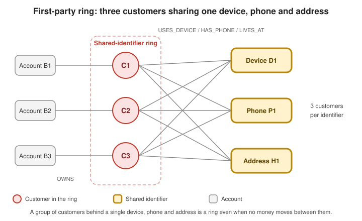

Fraud Detection
|
This content was generated with the assistance of AI and should be verified against the official documentation before being relied on in production. |
Fraud is rarely visible in a single record. A payment looks ordinary, an account looks ordinary, and the signal lives in
the structure around them: ten "different" customers who log in from the same device, a loop of accounts that pass
the same money round, an account that sits on the only path between two such groups. This page builds a small fraud
detection service on Spring Boot 4.1 and Spring Data Neo4j 8.1 with three layers: a batch job that finds and scores
rings, queries that surface shared identifiers and transfer cycles, and a real-time check that answers "is this
payment close to something already flagged?" in a request. The Graph Data Science plumbing (projection lifecycle,
AutoCloseable helper, memory guard, ShedLock scheduling) is defined once in
Calling GDS from Spring Boot and only used here.
Problem
Two kinds of ring matter, and they need different tools:
-
Transfer rings (laundering, mule networks): accounts that move money in loops and bridge accounts that connect loops. The relationship is a payment, so the evidence is directed, weighted and timed.
-
Shared-identifier rings (first-party and synthetic-identity fraud, bonus abuse): different customers that share a device, a phone number, an address or an IP address. The relationship is sharing, so the evidence is a node with an unusual number of customers attached.
A relational schema answers either question with self-joins whose cost grows with every hop; a graph traverses the relationships directly. The reasoning behind the pipeline (why Weakly Connected Components first, Louvain second, Betweenness Centrality third) is in the section Fraud and AML ring detection of the Neo4j reference, and the algorithms themselves in Community Detection Algorithms and Pathfinding and Centrality Algorithms; none of that is repeated here. This page shows how a service runs it.
The service has three responsibilities, with very different latency budgets:
Graph model
The model has six node labels. An Account holds money; a Customer owns accounts and is the person-like node that
identifiers attach to; Device, IpAddress, Phone and Address are the identifiers whose sharing is the signal.
Money moves between accounts as TRANSFER relationships carrying the amount and the time.

The figure shows the first-party case. The transfer case is the dataset of the Neo4j reference: seven accounts A1
to A7 where A1, A2, A3 and A4, A5, A6 are two transfer loops, A3 feeds A4, and A4 also pays the outside
account A7. The nodes and relationships are mapped like this:
import java.util.ArrayList;
import java.util.List;
import org.springframework.data.neo4j.core.schema.Id;
import org.springframework.data.neo4j.core.schema.Node;
import org.springframework.data.neo4j.core.schema.Relationship;
import org.springframework.data.neo4j.core.schema.Relationship.Direction;
@Node("Customer")
public class Customer {
@Id
private final String customerId;
private final String name;
private final boolean flagged;
@Relationship(type = "OWNS", direction = Direction.OUTGOING)
private final List<Account> accounts = new ArrayList<>();
@Relationship(type = "USES_DEVICE", direction = Direction.OUTGOING)
private final List<Device> devices = new ArrayList<>();
@Relationship(type = "HAS_PHONE", direction = Direction.OUTGOING)
private final List<Phone> phones = new ArrayList<>();
@Relationship(type = "LIVES_AT", direction = Direction.OUTGOING)
private final List<Address> addresses = new ArrayList<>();
@Relationship(type = "LOGGED_IN_FROM", direction = Direction.OUTGOING)
private final List<IpAddress> ipAddresses = new ArrayList<>();
public Customer(String customerId, String name, boolean flagged) {
this.customerId = customerId;
this.name = name;
this.flagged = flagged;
}
// getters omitted
}
@Node("Device")
public class Device {
@Id
private final String deviceId;
private final String fingerprint;
public Device(String deviceId, String fingerprint) {
this.deviceId = deviceId;
this.fingerprint = fingerprint;
}
}
@Node("Phone")
public class Phone {
@Id
private final String number; // E.164, normalised before it is stored
public Phone(String number) {
this.number = number;
}
}
@Node("Address")
public class Address {
@Id
private final String addressKey; // normalised street, number, postal code and country
private final String display;
public Address(String addressKey, String display) {
this.addressKey = addressKey;
this.display = display;
}
}
@Node("IpAddress")
public class IpAddress {
@Id
private final String value;
public IpAddress(String value) {
this.value = value;
}
}Everything above is declared with the annotations of the Spring Data Neo4j reference; see
Spring Data Neo4j — reference guide for @Node, @Id and
@Relationship, and Spring Data Neo4j for the mapping basics on this site.
The Account carries the two analytics results next to its business data, and its outgoing transfers are modelled as a
relationship with properties:
import java.time.ZonedDateTime;
import java.util.ArrayList;
import java.util.List;
import org.springframework.data.neo4j.core.schema.Id;
import org.springframework.data.neo4j.core.schema.Node;
import org.springframework.data.neo4j.core.schema.Relationship;
import org.springframework.data.neo4j.core.schema.Relationship.Direction;
import org.springframework.data.neo4j.core.schema.RelationshipProperties;
import org.springframework.data.neo4j.core.schema.TargetNode;
@Node("Account")
public class Account {
@Id
private final String accountNumber;
private final boolean flagged;
// written by the ring job, read by the payment check
private final Long communityId;
private final Double fraudScore;
@Relationship(type = "TRANSFER", direction = Direction.OUTGOING)
private final List<Transfer> outgoingTransfers = new ArrayList<>();
public Account(String accountNumber, boolean flagged, Long communityId, Double fraudScore) {
this.accountNumber = accountNumber;
this.flagged = flagged;
this.communityId = communityId;
this.fraudScore = fraudScore;
}
// getters omitted
}
@RelationshipProperties
public class Transfer {
private final String paymentId;
private final double amount; // GDS projects numeric properties only
private final ZonedDateTime timestamp;
@TargetNode
private final Account target;
public Transfer(String paymentId, double amount, ZonedDateTime timestamp, Account target) {
this.paymentId = paymentId;
this.amount = amount;
this.timestamp = timestamp;
this.target = target;
}
}See Spring Data Neo4j — reference guide for
@RelationshipProperties and @TargetNode. Three modelling decisions carry the rest of the page:
-
The identifiers are nodes, not properties of
Customer. A shared device is then one node with several incoming relationships, the shape a graph traverses and counts cheaply, instead of a string compared across rows. -
The amount is a
double(or alongin minor units), not aBigDecimal: GDS projects numeric properties only, and aBigDecimalis stored as a string by default. -
The entities are mostly for reading and for the occasional administrative save. The high-volume writes below use Cypher, because they need
MERGEsemantics and must not rewrite a whole node.
Schema
Spring Data Neo4j maps entities; it does not create constraints for them. The application creates its own at startup,
idempotently, so that MERGE is correct under concurrency (a uniqueness constraint is what makes two parallel
MERGE statements end up with one node) and so that the real-time check starts from an index instead of a label scan:
import org.springframework.boot.ApplicationArguments;
import org.springframework.boot.ApplicationRunner;
import org.springframework.data.neo4j.core.Neo4jClient;
import org.springframework.stereotype.Component;
@Component
public class FraudSchema implements ApplicationRunner {
private static final List<String> STATEMENTS = List.of(
"CREATE CONSTRAINT customer_id IF NOT EXISTS FOR (c:Customer) REQUIRE c.customerId IS UNIQUE",
"CREATE CONSTRAINT account_number IF NOT EXISTS FOR (a:Account) REQUIRE a.accountNumber IS UNIQUE",
"CREATE CONSTRAINT device_id IF NOT EXISTS FOR (d:Device) REQUIRE d.deviceId IS UNIQUE",
"CREATE CONSTRAINT phone_number IF NOT EXISTS FOR (p:Phone) REQUIRE p.number IS UNIQUE",
"CREATE CONSTRAINT address_key IF NOT EXISTS FOR (a:Address) REQUIRE a.addressKey IS UNIQUE",
"CREATE CONSTRAINT ip_value IF NOT EXISTS FOR (i:IpAddress) REQUIRE i.value IS UNIQUE",
"CREATE INDEX account_community IF NOT EXISTS FOR (a:Account) ON (a.communityId)",
"CREATE INDEX account_flagged IF NOT EXISTS FOR (a:Account) ON (a.flagged)",
"CREATE INDEX customer_flagged IF NOT EXISTS FOR (c:Customer) ON (c.flagged)",
"CREATE INDEX transfer_timestamp IF NOT EXISTS FOR ()-[t:TRANSFER]-() ON (t.timestamp)");
private final Neo4jClient client;
public FraudSchema(Neo4jClient client) {
this.client = client;
}
@Override
public void run(ApplicationArguments args) {
STATEMENTS.forEach(statement -> client.query(statement).run());
}
}IF NOT EXISTS makes every statement safe to run on each start, and a unique constraint creates its backing index, so
the six constraints already index the lookup keys. The account_community index serves the "same community as a
flagged account" lookup of the payment check, and the relationship index on timestamp serves the time window of
the cycle query. See Cypher manual — Constraints and
Cypher manual — Indexes, and the Spring Boot
application runner documentation.
| The statements are idempotent but not versioned. In a team with several environments, keep the same Cypher in a migration tool and let it own schema changes; the startup runner is the simplest thing that works. The schema vocabulary is explained in Indexes and Constraints. |
Writes
Payment events arrive continuously and may be delivered more than once, so the write path has two rules: MERGE on the
business key (accounts are created on first sight, never duplicated) and key the transfer on the payment id (a
redelivered event does not create a second relationship):
import java.time.Instant;
import java.util.Map;
import org.springframework.data.neo4j.core.Neo4jClient;
import org.springframework.stereotype.Service;
import org.springframework.transaction.annotation.Transactional;
public record PaymentEvent(String paymentId, String payer, String payee, double amount, Instant occurredAt) {
}
@Service
public class GraphIngestService {
private final Neo4jClient client;
public GraphIngestService(Neo4jClient client) {
this.client = client;
}
@Transactional
public void recordPayment(PaymentEvent event) {
client.query("""
MERGE (source:Account {accountNumber: $payer})
MERGE (target:Account {accountNumber: $payee})
MERGE (source)-[transfer:TRANSFER {paymentId: $paymentId}]->(target)
ON CREATE SET transfer.amount = $amount, transfer.timestamp = datetime($occurredAt)
""")
.bindAll(Map.of(
"payer", event.payer(),
"payee", event.payee(),
"paymentId", event.paymentId(),
"amount", event.amount(),
"occurredAt", event.occurredAt().toString()))
.run();
}
@Transactional
public void linkDevice(String customerId, String deviceId, String fingerprint) {
client.query("""
MERGE (customer:Customer {customerId: $customerId})
MERGE (device:Device {deviceId: $deviceId})
ON CREATE SET device.fingerprint = $fingerprint
MERGE (customer)-[:USES_DEVICE]->(device)
""")
.bindAll(Map.of("customerId", customerId, "deviceId", deviceId, "fingerprint", fingerprint))
.run();
}
}The MERGE clause matches the whole pattern or creates the whole pattern, which is why the transfer is merged after
both accounts exist and why only the key (paymentId) is in the merged pattern: properties that can differ between
deliveries belong in ON CREATE SET. The statements bind values as parameters, never as concatenated text, so a
payee name or device fingerprint cannot change the query. See
Cypher manual — MERGE and
Spring Data Neo4j — reference guide for Neo4jClient.
The linkDevice, linkPhone, linkAddress and linkIp methods differ only in the label and relationship type. If
two customer records later turn out to be one person, apoc.refactor.mergeNodes (APOC Core, with
mergeRels: true) folds them into one node while keeping the relationships; see
APOC — apoc.refactor.mergeNodes.
Optional: feeding the graph from Kafka
When the payments already flow through Kafka, the upsert above is the body of a listener. Idempotency is already in the Cypher, so the listener can use the plain at-least-once delivery of a consumer group:
import org.springframework.kafka.annotation.KafkaListener;
import org.springframework.stereotype.Component;
@Component
public class PaymentGraphListener {
private final GraphIngestService ingest;
public PaymentGraphListener(GraphIngestService ingest) {
this.ingest = ingest;
}
@KafkaListener(topics = "payments.completed", groupId = "fraud-graph")
public void onPayment(PaymentEvent event) {
ingest.recordPayment(event);
}
}Because the listener runs MERGE keyed on paymentId, a replay of the topic or a rebalance that redelivers a batch
changes nothing. Retries, dead-letter topics and batch listeners are in
Messaging with Kafka; see also
Spring for Apache Kafka — Receiving messages.
Keep the listener thin: the graph write takes milliseconds, and a payment that must be answered right now never waits
for it, because the real-time check reads the graph as it was.
Queries and analytics
Three jobs make up the analysis: the GDS ring pipeline, the shared-identifier query and the transfer-cycle query.
Batch ring detection: WCC, Louvain, Betweenness
The pipeline projects the transfer graph once, undirected (a ring is a structural fact, whichever way the money
flowed), and runs the three algorithms over the same in-memory graph. The helper, the unique graph names and the drop in
close() are the ones of the foundation page.
import java.time.Instant;
import java.time.temporal.ChronoUnit;
import java.util.Map;
import org.springframework.data.neo4j.core.Neo4jClient;
import org.springframework.stereotype.Service;
public record RingJobSummary(long accounts, long components, long communities, long scoredAccounts) {
}
@Service
public class FraudAnalyticsService {
private static final String TRANSFERS_SINCE = """
MATCH (source:Account)-[transfer:TRANSFER]->(target:Account)
WHERE transfer.timestamp >= datetime($since)
WITH gds.graph.project(
$graphName,
source,
target,
{relationshipProperties: transfer {.amount}},
{undirectedRelationshipTypes: ['*']}
) AS graph
RETURN graph.nodeCount AS nodeCount, graph.relationshipCount AS relationshipCount
""";
private final GdsGraphs graphs;
private final Neo4jClient client;
private final FraudProperties properties;
public FraudAnalyticsService(GdsGraphs graphs, Neo4jClient client, FraudProperties properties) {
this.graphs = graphs;
this.client = client;
this.properties = properties;
}
public RingJobSummary recomputeCommunities() {
var since = Instant.now().minus(properties.lookbackDays(), ChronoUnit.DAYS);
try (var graph = graphs.projectCypher("fraud", TRANSFERS_SINCE, Map.of("since", since.toString()))) {
long components = client
.query("""
CALL gds.wcc.write($graph, {writeProperty: 'componentId'})
YIELD componentCount
RETURN componentCount
""")
.bind(graph.name()).to("graph")
.fetchAs(Long.class)
.mappedBy((typeSystem, record) -> record.get("componentCount").asLong())
.one()
.orElseThrow();
long communities = client
.query("""
CALL gds.louvain.write($graph, {writeProperty: 'communityId', concurrency: 1})
YIELD communityCount
RETURN communityCount
""")
.bind(graph.name()).to("graph")
.fetchAs(Long.class)
.mappedBy((typeSystem, record) -> record.get("communityCount").asLong())
.one()
.orElseThrow();
long scored = client
.query("""
CALL gds.betweenness.write($graph, {writeProperty: 'fraudScore'})
YIELD nodePropertiesWritten
RETURN nodePropertiesWritten
""")
.bind(graph.name()).to("graph")
.fetchAs(Long.class)
.mappedBy((typeSystem, record) -> record.get("nodePropertiesWritten").asLong())
.one()
.orElseThrow();
return new RingJobSummary(graph.size().nodeCount(), components, communities, scored);
}
}
}The statements follow the GDS manual: the gds.graph.project aggregation function builds the in-memory graph from a
MATCH (see the projection section of the foundation page), and the write mode of each algorithm persists a node
property with writeProperty. See GDS — Weakly Connected Components,
GDS — Louvain and
GDS — Betweenness Centrality.
A few details decide whether the results are usable:
-
Order and purpose.
componentIdtells an analyst which accounts are connected at all,communityIdgroups the dense sub-communities inside each component, andfraudScore(the betweenness value) ranks the bridges. On the seven-account dataset WCC finds one component, Louvain splits it into the two rings, andA4gets the highest score because it sits on the only path between the rings andA7. -
Community ids are labels, not identities. Louvain and WCC do not document a seed, so the numeric ids may change between runs and
concurrency: 1only reduces the variation. Store them, group by them, but do not treat the value as a stable key, and do not alert on "community 7 grew"; compare memberships instead. -
Betweenness is the expensive step. Its exact form is quadratic in practice on large components. For a large graph set
samplingSize(andsamplingSeedto make the sample repeatable) as the manual describes, and run thegds.betweenness.write.estimatevariant first, as shown in the foundation page’s memory guard. -
The window is a parameter.
properties.lookbackDays()limits the projection to recent transfers, so the in-memory graph stays bounded however long the system has been running.
The job itself is the scheduled, ShedLock-protected bean of the foundation page, wired to this service; a second job can
run the shared-identifier query below under its own lock name. Choosing lockAtMostFor longer than the longest
realistic run, and the cron expression from configuration, are explained in
Scheduling and ShedLock:
@Component
public class RingDetectionJob {
private static final Logger log = LoggerFactory.getLogger(RingDetectionJob.class);
private final FraudAnalyticsService analytics;
private final IdentifierRingService identifierRings;
public RingDetectionJob(FraudAnalyticsService analytics, IdentifierRingService identifierRings) {
this.analytics = analytics;
this.identifierRings = identifierRings;
}
@Scheduled(cron = "${fraud.rings.cron:0 30 2 * * *}")
@SchedulerLock(name = "fraud-rings", lockAtMostFor = "PT2H", lockAtLeastFor = "PT5M")
public void run() {
var transfers = analytics.recomputeCommunities();
var identifiers = identifierRings.findAll();
log.info("Ring job: {}; {} shared-identifier rings", transfers, identifiers.size());
}
}See Spring Framework — Task Execution and Scheduling
and ShedLock. The configuration record read above is a plain
@ConfigurationProperties record. Every component has a @DefaultValue, because an unset int would bind to 0, and
a zero window, ring size or hop count turns every query on this page into an empty result or invalid Cypher ({2,0},
*1..0):
import org.springframework.boot.SpringApplication;
import org.springframework.boot.autoconfigure.SpringBootApplication;
import org.springframework.boot.context.properties.ConfigurationProperties;
import org.springframework.boot.context.properties.ConfigurationPropertiesScan;
import org.springframework.boot.context.properties.bind.DefaultValue;
@ConfigurationProperties("fraud")
public record FraudProperties(
@DefaultValue("30") int lookbackDays, // projection window for the ring job
@DefaultValue("3") int minRingSize, // customers sharing one identifier before it is reported
@DefaultValue("50") int maxSharedCustomers, // above this an identifier is shared infrastructure, not a ring
@DefaultValue("6") int cycleMaxHops, // longest transfer cycle searched for
@DefaultValue("2") int paymentCheckHops) { // neighbourhood size of the real-time check
}
@SpringBootApplication
@ConfigurationPropertiesScan
public class FraudApplication {
public static void main(String[] args) {
SpringApplication.run(FraudApplication.class, args);
}
}@ConfigurationPropertiesScan registers the record (an explicit @EnableConfigurationProperties(FraudProperties.class)
does the same), and fraud.lookback-days, fraud.min-ring-size and the other properties override the defaults per
environment. The integration test below relies on the defaults: the fixture’s timestamps lie within 30 days, the device
ring has three customers, and two hops reach the flagged neighbour. See
Spring Boot — Externalized Configuration.
Shared-identifier rings
A first-party ring needs no algorithm: it is a node with several customers attached. Counting them is a single aggregation, and the same query serves devices, phones, addresses and IP addresses once the label and the relationship type are chosen from a fixed enum (Cypher cannot take either as a parameter, and an enum keeps user text out of the statement):
public enum IdentifierType {
DEVICE("Device", "USES_DEVICE"),
PHONE("Phone", "HAS_PHONE"),
ADDRESS("Address", "LIVES_AT"),
IP_ADDRESS("IpAddress", "LOGGED_IN_FROM");
private final String label;
private final String relationship;
IdentifierType(String label, String relationship) {
this.label = label;
this.relationship = relationship;
}
String label() {
return label;
}
String relationship() {
return relationship;
}
}
public record IdentifierRing(IdentifierType type, String identifier, List<String> customerIds) {
}
@Service
public class IdentifierRingService {
private final Neo4jClient client;
private final FraudProperties properties;
public IdentifierRingService(Neo4jClient client, FraudProperties properties) {
this.client = client;
this.properties = properties;
}
@Transactional(readOnly = true)
public List<IdentifierRing> find(IdentifierType type) {
var statement = """
MATCH (customer:Customer)-[:%s]->(identifier:%s)
WITH identifier, collect(customer.customerId) AS customerIds
WHERE size(customerIds) >= $minRingSize AND size(customerIds) <= $maxSharedCustomers
RETURN coalesce(identifier.deviceId, identifier.number, identifier.addressKey, identifier.value)
AS identifier,
customerIds
ORDER BY size(customerIds) DESC
""".formatted(type.relationship(), type.label());
return client.query(statement)
.bind(properties.minRingSize()).to("minRingSize")
.bind(properties.maxSharedCustomers()).to("maxSharedCustomers")
.fetchAs(IdentifierRing.class)
.mappedBy((typeSystem, record) -> new IdentifierRing(
type,
record.get("identifier").asString(),
record.get("customerIds").asList(value -> value.asString())))
.all()
.stream()
.toList();
}
@Transactional(readOnly = true)
public List<IdentifierRing> findAll() {
return Arrays.stream(IdentifierType.values())
.flatMap(type -> find(type).stream())
.toList();
}
}The upper threshold matters as much as the lower: a household address, an office device or a carrier-grade NAT address
is shared by hundreds of unrelated customers and would drown the real rings, so maxSharedCustomers turns "too shared
to mean anything" into an exclusion. See
Cypher manual — Aggregating functions and
Cypher manual — Scalar functions.
A ring found this way can be extended through the transfers: the accounts owned by the customers of a device ring are exactly the accounts to search for transfer cycles among, and the community scores of the batch job tell which of those accounts are bridges.
Transfer cycles bounded by hops and time
A laundering loop is a path that returns to its start. Variable-length path patterns find it, and quantified path patterns let the time window sit inside the pattern, so that a hop that is too old is pruned during the traversal and not filtered after a million paths have been built. The hop bounds of a quantifier are literals, not parameters, so the service validates the integer and formats it into the text:
public record TransferCycle(List<String> accounts, double totalAmount) {
}
@Service
public class CycleService {
private static final String CYCLES = """
MATCH path = (start:Account {accountNumber: $account})
((:Account)-[transfer:TRANSFER WHERE transfer.timestamp >= datetime($from)
AND transfer.timestamp < datetime($to)]->(:Account)){2,%d}
(start)
RETURN [account IN nodes(path) | account.accountNumber] AS accounts,
reduce(total = 0.0, t IN relationships(path) | total + t.amount) AS totalAmount
LIMIT $limit
""";
private final Neo4jClient client;
private final FraudProperties properties;
public CycleService(Neo4jClient client, FraudProperties properties) {
this.client = client;
this.properties = properties;
}
@Transactional(readOnly = true)
public List<TransferCycle> cyclesThrough(String account, Instant from, Instant to, int limit) {
int maxHops = Math.min(properties.cycleMaxHops(), 8);
return client.query(CYCLES.formatted(maxHops))
.bind(account).to("account")
.bind(from.toString()).to("from")
.bind(to.toString()).to("to")
.bind(limit).to("limit")
.fetchAs(TransferCycle.class)
.mappedBy((typeSystem, record) -> new TransferCycle(
record.get("accounts").asList(value -> value.asString()),
record.get("totalAmount").asDouble()))
.all()
.stream()
.toList();
}
}The pattern (start) (...){2,N} (start) reuses the start variable at both ends, which closes the path into a cycle,
and {2,N} bounds its length (a two-hop "cycle" is a round trip between two accounts). Relationships are not repeated
within one pattern, so a cycle is reported once per start node and rotation. On the dataset, searching from A1 with a
window that covers the transfers returns A1, A2, A3, A1. The same search can be written with a classic
variable-length relationship [:TRANSFER*2..6] plus an all(...) predicate on the relationships; the quantified form
reads better and applies the predicate while expanding. See
Cypher manual — Patterns and
Cypher manual — Variable-length patterns.
Bound the search, always. The cost of a cycle search grows with the branching factor raised to the hop
count, so a cap on hops (cycleMaxHops, never above 8 here), a window on time and a LIMIT are not optimisations but
the difference between a query and an outage. A single account with a very large number of transfers (a merchant, a
payment processor) should be excluded from the pattern or searched from the other side.
|
Service and API
The batch jobs produce communityId, fraudScore and the shared-identifier rings. The payment check reads them,
together with one live traversal around the payee, and returns a decision in milliseconds. Heavy work stays out of the
request, in line with the transaction notes of the foundation page.
The check combines three signals, each an indexed lookup followed by a short bounded traversal:
-
the payee is in the same community as a flagged account (
communityIdfrom the batch job), -
the payee is within N transfer hops of a flagged account (a live read, so it also sees what the job has not yet scored),
-
the payer’s device is shared with a flagged customer, or the payee’s owner shares a device with one.
public enum Decision {
ALLOW, REVIEW, BLOCK
}
public record PaymentCheckRequest(
@NotBlank String payerAccount,
@NotBlank String payeeAccount,
@Positive double amount,
String deviceId) {
}
public record PaymentRisk(Decision decision, List<String> reasons) {
}
@Service
public class PaymentCheckService {
private static final String SIGNALS = """
MATCH (payee:Account {accountNumber: $payee})
RETURN
payee.communityId IS NOT NULL AND EXISTS {
MATCH (flagged:Account {flagged: true})
WHERE flagged.communityId = payee.communityId AND flagged <> payee
} AS flaggedCommunity,
EXISTS {
MATCH (payee)-[:TRANSFER*1..%d]-(flagged:Account {flagged: true})
WHERE flagged <> payee
} AS nearFlaggedAccount,
EXISTS {
MATCH (payee)<-[:OWNS]-(:Customer)-[:USES_DEVICE]->(:Device)<-[:USES_DEVICE]-(flagged:Customer {flagged: true})
} AS payeeSharesDeviceWithFlagged,
$deviceId <> '' AND EXISTS {
MATCH (:Device {deviceId: $deviceId})<-[:USES_DEVICE]-(flagged:Customer {flagged: true})
} AS payerDeviceFlagged
""";
private final Neo4jClient client;
private final String signalsQuery;
public PaymentCheckService(Neo4jClient client, FraudProperties properties) {
this.client = client;
this.signalsQuery = SIGNALS.formatted(properties.paymentCheckHops());
}
@Transactional(readOnly = true)
public PaymentRisk check(PaymentCheckRequest request) {
var signals = client.query(signalsQuery)
.bind(request.payeeAccount()).to("payee")
.bind(Objects.requireNonNullElse(request.deviceId(), "")).to("deviceId")
.fetchAs(Signals.class)
.mappedBy((typeSystem, record) -> new Signals(
record.get("flaggedCommunity").asBoolean(false),
record.get("nearFlaggedAccount").asBoolean(false),
record.get("payeeSharesDeviceWithFlagged").asBoolean(false),
record.get("payerDeviceFlagged").asBoolean(false)))
.one()
.orElse(new Signals(false, false, false, false));
return decide(signals);
}
static PaymentRisk decide(Signals signals) {
var reasons = new ArrayList<String>();
if (signals.flaggedCommunity()) {
reasons.add("Payee is in the same community as a flagged account");
}
if (signals.nearFlaggedAccount()) {
reasons.add("Payee is within a few transfers of a flagged account");
}
if (signals.payeeSharesDeviceWithFlagged()) {
reasons.add("Payee owner shares a device with a flagged customer");
}
if (signals.payerDeviceFlagged()) {
reasons.add("Payer device is used by a flagged customer");
}
var decision = reasons.isEmpty() ? Decision.ALLOW
: reasons.size() == 1 ? Decision.REVIEW : Decision.BLOCK;
return new PaymentRisk(decision, List.copyOf(reasons));
}
record Signals(boolean flaggedCommunity, boolean nearFlaggedAccount,
boolean payeeSharesDeviceWithFlagged, boolean payerDeviceFlagged) {
}
}The bounded *1..N range is formatted once, from configuration, in the constructor; it never comes from the request.
EXISTS { ... } subqueries stop at the first match, so a payee with no flagged neighbour costs one bounded expansion
and a payee next to one costs almost nothing. See
Cypher manual — EXISTS subqueries. Combining
signals into ALLOW, REVIEW and BLOCK is deliberately simple; in a real system the rule set, thresholds and
scores come from a risk engine, and the graph supplies features to it.
The endpoint is a validated controller with a read-only service behind it:
@RestController
@RequestMapping("/fraud")
public class PaymentCheckController {
private final PaymentCheckService checks;
private final FraudQueryService queries;
public PaymentCheckController(PaymentCheckService checks, FraudQueryService queries) {
this.checks = checks;
this.queries = queries;
}
@PostMapping("/payment-checks")
public PaymentRisk check(@Valid @RequestBody PaymentCheckRequest request) {
return checks.check(request);
}
@GetMapping("/identifier-rings")
public List<IdentifierRing> identifierRings(@RequestParam IdentifierType type) {
return queries.identifierRings(type);
}
@GetMapping("/accounts/top-scored")
public List<RankedAccount> topScored(@RequestParam(defaultValue = "10") @Max(100) int limit) {
return queries.topScored(limit);
}
}FraudQueryService is a thin wrapper over IdentifierRingService.find and the persistedScores query of the foundation
page; the controller never starts a GDS job. See
Spring Framework — Annotated Controllers,
and REST APIs for validation and error handling on this site.
Latency notes
-
Anchor on an index. Every traversal starts from a unique lookup (
accountNumber,deviceId). A label scan in a request path is a bug. -
Bound the neighbourhood. Two or three hops are almost always enough, and the number of paths grows with the branching factor raised to the hop count. A payee with a very large degree (a marketplace account) needs a degree cap or its own rule.
-
Prefer precomputed answers. The community signal is an equality on an indexed property; only the neighbourhood signal traverses. If a signal is expensive, move it into the batch job and store it as a property.
-
Set a timeout. The server setting
db.transaction.timeoutbounds how long any transaction may run, and the payment system should have its own client timeout and a default decision (usually "allow and review later") when the check does not answer in time. -
Cache with care. A decision for the same payee within seconds can be cached as described in Caching, evicted when the ring job finishes or an analyst flags an account.
-
Measure it. Record the check duration and the decision counts with Micrometer, as shown in Metrics and Observability, and alert on the p99, not the mean.
-
Protect the endpoint. It exposes risk information about accounts, so it belongs behind the service-to-service authentication of Spring Security and never on a public route.
See Operations manual — Configuration settings
for db.transaction.timeout.
Integration test
The test starts a real Neo4j with the GDS and APOC plugins, loads the seven-account dataset of the Neo4j reference plus a small first-party ring, runs the real job and asserts on structure: who is grouped with whom and who ranks first. Neither Louvain nor WCC documents a random seed, so the test never asserts community ids, component ids or floating-point scores.
import static org.assertj.core.api.Assertions.assertThat;
import java.time.Instant;
import java.util.List;
import java.util.Map;
import java.util.Set;
import java.util.stream.Collectors;
import org.junit.jupiter.api.BeforeEach;
import org.junit.jupiter.api.Test;
import org.springframework.beans.factory.annotation.Autowired;
import org.springframework.boot.test.context.SpringBootTest;
import org.springframework.boot.testcontainers.service.connection.ServiceConnection;
import org.springframework.data.neo4j.core.Neo4jClient;
import org.testcontainers.junit.jupiter.Container;
import org.testcontainers.junit.jupiter.Testcontainers;
import org.testcontainers.neo4j.Neo4jContainer;
@Testcontainers
@SpringBootTest
class FraudDetectionIT {
@Container
@ServiceConnection
static final Neo4jContainer NEO4J = new Neo4jContainer("neo4j:2026.10.1")
.withEnv("NEO4J_PLUGINS", "[\"graph-data-science\", \"apoc\"]");
private static final String FIXTURE = """
CREATE (a1:Account {accountNumber: 'A1', flagged: false})
CREATE (a2:Account {accountNumber: 'A2', flagged: false})
CREATE (a3:Account {accountNumber: 'A3', flagged: false})
CREATE (a4:Account {accountNumber: 'A4', flagged: false})
CREATE (a5:Account {accountNumber: 'A5', flagged: false})
CREATE (a6:Account {accountNumber: 'A6', flagged: false})
CREATE (a7:Account {accountNumber: 'A7', flagged: false})
CREATE (a1)-[:TRANSFER {paymentId: 'p1', amount: 5000, timestamp: datetime() - duration('PT8H')}]->(a2)
CREATE (a2)-[:TRANSFER {paymentId: 'p2', amount: 4800, timestamp: datetime() - duration('PT7H')}]->(a3)
CREATE (a3)-[:TRANSFER {paymentId: 'p3', amount: 4600, timestamp: datetime() - duration('PT6H')}]->(a1)
CREATE (a3)-[:TRANSFER {paymentId: 'p4', amount: 4000, timestamp: datetime() - duration('PT5H')}]->(a4)
CREATE (a4)-[:TRANSFER {paymentId: 'p5', amount: 3900, timestamp: datetime() - duration('PT4H')}]->(a5)
CREATE (a5)-[:TRANSFER {paymentId: 'p6', amount: 3800, timestamp: datetime() - duration('PT3H')}]->(a6)
CREATE (a6)-[:TRANSFER {paymentId: 'p7', amount: 3700, timestamp: datetime() - duration('PT2H')}]->(a4)
CREATE (a4)-[:TRANSFER {paymentId: 'p8', amount: 1500, timestamp: datetime() - duration('PT1H')}]->(a7)
CREATE (c1:Customer {customerId: 'C1', flagged: false})-[:OWNS]->(:Account {accountNumber: 'B1', flagged: false})
CREATE (c2:Customer {customerId: 'C2', flagged: false})-[:OWNS]->(:Account {accountNumber: 'B2', flagged: false})
CREATE (c3:Customer {customerId: 'C3', flagged: true})-[:OWNS]->(:Account {accountNumber: 'B3', flagged: false})
CREATE (d:Device {deviceId: 'D1'})
CREATE (c1)-[:USES_DEVICE]->(d)
CREATE (c2)-[:USES_DEVICE]->(d)
CREATE (c3)-[:USES_DEVICE]->(d)
""";
@Autowired
Neo4jClient client;
@Autowired
FraudAnalyticsService analytics;
@Autowired
IdentifierRingService identifierRings;
@Autowired
CycleService cycles;
@Autowired
PaymentCheckService checks;
@BeforeEach
void loadFixture() {
client.query("MATCH (n) DETACH DELETE n").run();
client.query(FIXTURE).run();
analytics.recomputeCommunities();
}
@Test
void louvainSeparatesTheTwoRings() {
var communities = membership("communityId");
assertThat(communities.get("A1")).isEqualTo(communities.get("A2")).isEqualTo(communities.get("A3"));
assertThat(communities.get("A4")).isEqualTo(communities.get("A5")).isEqualTo(communities.get("A6"));
assertThat(communities.get("A1")).isNotEqualTo(communities.get("A4"));
}
@Test
void wccFindsOneComponentForTheSevenAccounts() {
var components = membership("componentId");
assertThat(components.entrySet().stream()
.filter(entry -> entry.getKey().matches("A[1-7]"))
.map(Map.Entry::getValue)
.collect(Collectors.toSet())).hasSize(1);
}
@Test
void betweennessRanksA4First() {
var top = client.query("""
MATCH (a:Account) WHERE a.fraudScore IS NOT NULL AND a.accountNumber STARTS WITH 'A'
RETURN a.accountNumber AS account ORDER BY a.fraudScore DESC LIMIT 1
""")
.fetchAs(String.class)
.mappedBy((typeSystem, record) -> record.get("account").asString())
.one()
.orElseThrow();
assertThat(top).isEqualTo("A4");
}
@Test
void sharedDeviceRingIsReported() {
var rings = identifierRings.find(IdentifierType.DEVICE);
assertThat(rings).singleElement().satisfies(ring -> {
assertThat(ring.identifier()).isEqualTo("D1");
assertThat(ring.customerIds()).containsExactlyInAnyOrder("C1", "C2", "C3");
});
}
@Test
void transferCycleThroughA1IsFound() {
var found = cycles.cyclesThrough("A1", Instant.now().minusSeconds(86_400), Instant.now(), 10);
assertThat(found).anySatisfy(cycle -> assertThat(cycle.accounts()).contains("A1", "A2", "A3"));
}
@Test
void paymentToAFlaggedNeighbourIsReviewed() {
client.query("MATCH (a:Account {accountNumber: 'A4'}) SET a.flagged = true").run();
var risk = checks.check(new PaymentCheckRequest("A7", "A5", 100, null));
assertThat(risk.decision()).isIn(Decision.REVIEW, Decision.BLOCK);
assertThat(risk.reasons()).isNotEmpty();
}
@Test
void deviceSharedWithFlaggedCustomerIsReported() {
var risk = checks.check(new PaymentCheckRequest("A1", "B1", 100, "D1"));
assertThat(risk.reasons()).anyMatch(reason -> reason.contains("device"));
}
private Map<String, Long> membership(String property) {
var rows = client.query("""
MATCH (a:Account) WHERE a.%s IS NOT NULL
RETURN a.accountNumber AS account, a.%s AS value
""".formatted(property, property))
.fetchAs(Membership.class)
.mappedBy((typeSystem, record) -> new Membership(
record.get("account").asString(), record.get("value").asLong()))
.all();
return rows.stream().collect(Collectors.toMap(Membership::account, Membership::value));
}
private record Membership(String account, long value) {
}
}The container, @ServiceConnection and the plugin variable are the ones explained in the setup notes of the foundation
page; the image tag is pinned so that a GDS upgrade is a deliberate change. See
Testcontainers — Neo4j module and
Spring Boot — Testcontainers. General
conventions for integration tests are in
Unit and Integration Testing.
What the assertions deliberately avoid:
-
No exact ids and no scores. Louvain and WCC document no
randomSeed, so the numbers may change between runs. The test compares memberships (A1, A2 and A3 share a community that A4 does not) and a ranking (A4 is first), which are properties of the structure, not of the run. -
concurrency: 1in the job removes one source of variation but guarantees nothing about the ids, which is why the assertions above do not depend on it. Where an algorithm does document a seed (Betweenness hassamplingSeed, KNN hasrandomSeedtogether withconcurrency: 1), set it in the test configuration. -
No assertion on
A7or on the number of communities. The reference states that Louvain splits the dataset into the two rings; where the outside accountA7lands is not part of that statement. -
The fixture is reloaded before each test and the timestamps are relative to the current time, so the lookback window and the cycle window always cover them.
Pitfalls and variations
-
Shared infrastructure looks like a ring. Offices, public Wi-Fi, carrier NAT and shared family devices attach hundreds of unrelated customers to one node. Keep the upper threshold (
maxSharedCustomers), and consider weighting identifiers by rarity. -
Louvain ids are not stable. Never store a community id as if it were a case id. Open cases against a set of account numbers, and match a new run to the old one by membership overlap.
-
Overwriting analytics with a
save(). A repositorysave()rewrites the mapped properties of the node it saves. If anAccountloaded before a job run is saved after it, the stalecommunityIdandfraudScorego back to the database. Write transactional data with the Cypher of this page, re-read before saving, or save only entities that do not carry analytics properties. -
Flags feed the signals. The payment check trusts
flagged. A flag set by mistake spreads suspicion to the whole neighbourhood, so record who flagged what and why, expire flags, and review the accounts that were blocked only because of proximity. -
Do not put graph results in the decision alone. A graph signal is evidence for a person or a rule engine, not a verdict. Keep
reasonsin every response so that a blocked customer can be answered. -
Identifiers are personal data. Devices, phones, addresses and IP addresses fall under data-protection rules; store normalised or hashed values where the business allows it, and apply retention to the relationships as well as to the nodes.
-
Never
id(). ExposeaccountNumberorelementId(...)in APIs and in GDS rows, as the foundation page shows; the internal id is deprecated and not stable across stores. -
Do not run the job in a request. The projection is not transactional and long runs hold memory; the endpoint reads results only.
Variations that reuse the same model:
-
Similarity instead of exact sharing. Node Similarity (
gds.nodeSimilarity) over the customer-to-identifier graph scores customers that share most of their identifiers, which catches rings that rotate one device but keep the same phone and address. The procedure names and tiers are in the setup notes of the foundation page. -
Strong components for pass-through money. Strongly Connected Components (
gds.scc) on the directed transfer projection finds exactly the groups in which money can return to its source. -
Feature for a model. Write
communityIdsize,fraudScoreand the shared-identifier counts as properties and feed them to the scoring model that already exists; the graph is a feature source, not a replacement. -
Cleaning up identities. After analysts confirm that two customer nodes are the same person, merge them with
apoc.refactor.mergeNodesso that the next ring run sees one customer with all the identifiers.